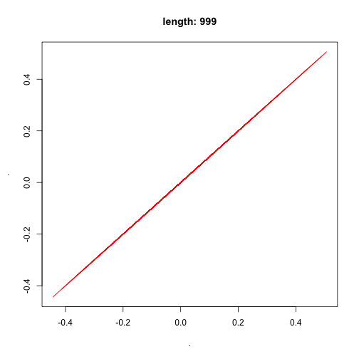
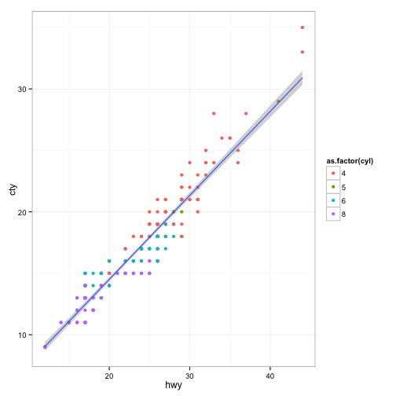
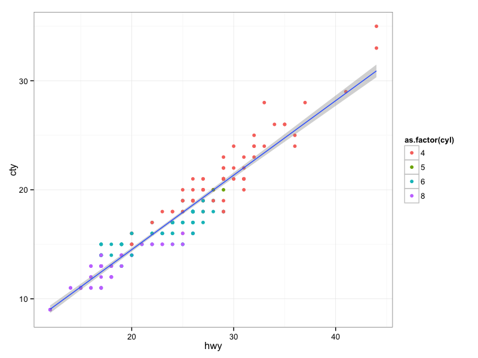
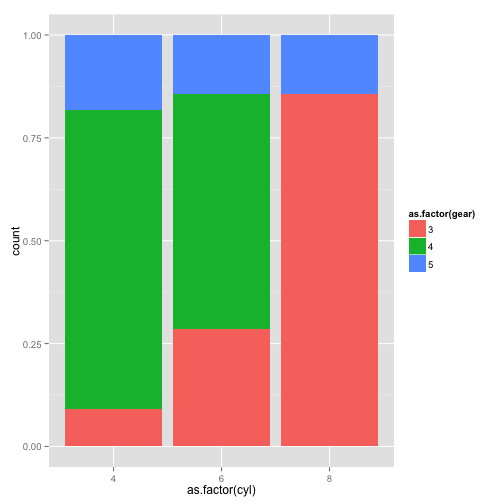
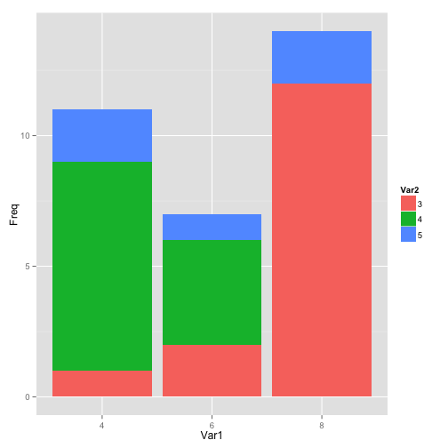
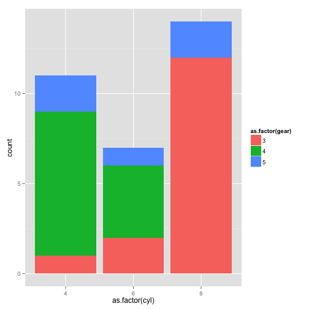

R 语言中级培训
星环数据挖掘组_daitao.xing
Copyright @Transwarp Inc. | All Rights Reserved
目录
- R的核心
- 替代For的Apply家族函数
- 管道操作
- 数据获取
- R高效数据处理
- 其他有关数据科学的topic
- 深入了解数据:ggplot2
R的核心:函数式编程思想
FP
1+2
## [1] 3
'+'(1,2)
## [1] 3
funs <- c(lm, median, sd, mad, IQR)
- Anonymous functions
- Closures
- List of functions
summary <- function(x) {
c(mean(x, na.rm = TRUE),
median(x, na.rm = TRUE),
sd(x, na.rm = TRUE),
mad(x, na.rm = TRUE),
IQR(x, na.rm = TRUE))
}
summary <- function(x) {
funs <- c(mean, median, sd, mad, IQR)
lapply(funs, function(f) f(x, na.rm = TRUE))
}
闭包
power <- function(exponent) {
function(x) {
x ^ exponent
}
}
Lists of functions
compute_mean <- list(
base = function(x) mean(x),
sum = function(x) sum(x) / length(x),
manual = function(x) {
total <- 0
n <- length(x)
for (i in seq_along(x)) {
total <- total + x[i] / n
}
total
}
)
compute_mean$sum()
compute_mean[["sum"]]()
R中的管道操作
管道操作
- shell |
- magrittr 和 pipeR(renkun)
- 上一步输出为下一步的输入
- 比管道更加灵活（主动判断应该填入的位置）
- %>% 将结果输送到函数的第一个参数
- %>>% 将结果输送到表达式中.的位置
- recharts
自定义的管道
`%^_^%` <- function(from,to) {
cat(paste(from,"smiles to",to))
}
"Ken" %^_^% "Jenny"
## Ken smiles to Jenny
library(magrittr)
rnorm(10000,mean=10,sd=1) %>>%
sample(.,size=length(.)*0.1,replace=FALSE) %>%
log %>%
diff %>>%
plot(.,col="red",type="l",
main=sprintf("length: %d",length(.)))

R apply家族
替代for的高效函数
- apply
- mapply
- lapply
- sapply
apply(X,margin,FUN)
对对象的每一个部分施加函数
apply(iris[,1:3],2,max)
## Sepal.Length Sepal.Width Petal.Length
## 7.9 4.4 6.9
也可以对高维数组操作
x <- 1:27
dim(x) <- c(3,3,3)
apply(x, c(1,2), FUN = paste,collapse =",")
## [,1] [,2] [,3]
## [1,] "1,10,19" "4,13,22" "7,16,25"
## [2,] "2,11,20" "5,14,23" "8,17,26"
## [3,] "3,12,21" "6,15,24" "9,18,27"
lapply(X,FUN)和sapply(X,FUN)
对对象的每一个元素进行操作(当对象是DF时,逐列进行)
temp <- iris[,1:3]
head(sapply(temp,as.character))
## Sepal.Length Sepal.Width Petal.Length
## [1,] "5.1" "3.5" "1.4"
## [2,] "4.9" "3" "1.4"
## [3,] "4.7" "3.2" "1.3"
## [4,] "4.6" "3.1" "1.5"
## [5,] "5" "3.6" "1.4"
## [6,] "5.4" "3.9" "1.7"
借助高效的管道函数，我们可以构造出更灵活的用法
sapply(1:3, . %>% seq_len %>% sum)
## [1] 1 3 6
funs2 <- list(
sum = function(x, ...) sum(x, ..., na.rm = TRUE),
mean = function(x, ...) mean(x, ..., na.rm = TRUE),
median = function(x, ...) median(x, ..., na.rm = TRUE)
)
lapply(funs2, function(f) f(x))
Mapply(FUN,....,MoreArg = ,....)
- 对多个对象逐个元素进行操作(比如对DF中的多列同时操作)
mapply(paste,
1:5,letters[1:5],LETTERS[1:5],
MoreArgs = list(sep='-'))
## [1] "1-a-A" "2-b-B" "3-c-C" "4-d-D" "5-e-E"
- 当函数FUN需要多个参数输入时
test <- c("0","01","002")
res <- mapply(function(x, y) paste0(rep(x, y), collapse = ""), 0, 3- nchar(test))
paste0(res,test)
## [1] "000" "001" "002"
rollapply
library(zoo)
z <- rnorm(6)
rollapply(z, 2, sum)
## [1] -1.6605202 -3.6657001 -1.3068213 1.1257449 0.8592158
bootstrap 抽样
boot_lm <- function(formula,data,...){
function(){
lm(formula = formula,
data = data[sample(nrow(data),replace = T),],...)
}
}
iris_boot <- boot_lm(Sepal.Length ~ Petal.Length,iris)
bstrap <- sapply(X= 1:10000,
FUN = function(x) iris_boot()$coef)
apply(bstrap,MARGIN = 1,FUN = quantile,prob =c(0.025,0.5,0.975))
R的数据获取，web scraping
- XML package 结构化网页数据抓取
- rvest package(Hadley god) （非结构化网页数据抓取）
结构化网页数据抓取:XML package
library(XML)
url <- 'http://www.basketball-reference.com/teams/NYK/2015_games.html'
tables <- readHTMLTable(url,
stringsAsFactors = FALSE,
header=F)
data <- tables[[1]]
head(data,2)
## V1 V2 V3 V4 V5 V6 V7 V8 V9
## 1 1 Wed, Oct 29, 2014 8:00p EST Box Score Chicago Bulls L
## 2 2 Thu, Oct 30, 2014 8:00p EST Box Score @ Cleveland Cavaliers W
## V10 V11 V12 V13 V14 V15
## 1 80 104 0 1 L 1
## 2 95 90 1 1 W 1
查看网页上的超链接
getHTMLLinks(url)
非结构化数据的获取:rvest package
library(rvest)
freak <- html_session("http://torrentfreak.com/top-10-most-pirated-movies-of-the-week-130304/")
freak %>%
html_nodes(".widg-topcomments-post-title") %>%
html_text() %>% .[1:2]
## [1] "Transmission Releases Long-Awaited BitTorrent Client For Windows"
## [2] "Pirated ‘Star Wars: The Force Awakens’ Blu-Ray Leaks Online"
特征工程和数据预处理
reshape2
数据的两种形状
统计中待分析的数据框通常有两种形式
- 长型数据（堆叠数据），长型数据是各变量取值在一列中，而对应的变量名在另一列。
- 宽型数据（非堆叠数据），宽型数据一般是各变量取值类型一致，而变量以不同列的形式构成。
例如iris的前四列子集即是一个典型的宽型数据。例如下面将宽型数据转为长型数据：
data_w <- iris[,1:4]
data_l <- stack(data_w)
data_w <- unstack(data_l)
数据的两种形状
只要在一列中存在分类变量，都可以将其看作是长型数据。在上例中iris的前四列可以看作是宽型数据，但最后两列可以看作是一个长型数据。可以根据Species变量将数据转为宽型。并得到各花种类的平均值。
subdata <- iris[,4:5]
data_w <- unstack(subdata)
colMeans(data_w)
## setosa versicolor virginica
## 0.246 1.326 2.026
数据重塑计算
在实践中这种单纯的长宽格式互转并不多见，因为我们并不是需要不同的数据格式，而需要不同格式下的分析结果。在上例中我们先转换数据格式再计算分析结果，而更常见的是一步直接得到分析结果。此时我们需要的是更为强大的reshape2包。
library(reshape2)
dcast(data=subdata, # 分析对象
formula=Species~., # 数据分组的方式
value.var='Petal.Width', # 要计算的数值对象
fun=mean) # 计算用函数名
## Species .
## 1 setosa 0.246
## 2 versicolor 1.326
## 3 virginica 2.026
dcast的思路和aggregate很相似，都是根据变量切分数据，再对分组后的数据进行计算，但dcast的输出格式和功能在多维情况下要方便很多。
数据重塑计算
即melt函数，将一个宽型数据融合成一个长型数据。例如我们将iris数据集进行融合。
iris_long <- melt(data=iris, # 要融合的对象
id='Species') # 哪些变量不参与到融合中
一个纯粹的长型数据，只包含一个数值变量，其它均为分类变量。而一个纯粹的宽型数据，则不包含分类变量，均为数值变量。而现实中你遇到要处理的数据，则多半是二者的混杂，正如iris数据集那样。
数据重塑计算
melt和dcast正如同是铁匠的两种得力工具，melt可以看作是炼炉，负责融合数据，成为一个纯粹的长型。而dcast则可以看作是铁锤，负责重铸数据，使之成为需要的格式，同时加以分析。下面的例子就是将之前生成的数据进行汇总计算
dcast(data=iris_long,
formula=Species~variable,
value.var='value',fun=mean)
## Species Sepal.Length Sepal.Width Petal.Length Petal.Width
## 1 setosa 5.006 3.428 1.462 0.246
## 2 versicolor 5.936 2.770 4.260 1.326
## 3 virginica 6.588 2.974 5.552 2.026
小练习
tips数据集练习，它是一个餐厅侍者收集的关于小费的数据，其中包含了七个变量，包括总费用、付小费的金额、付款者性别、是否吸烟、日期、日间、顾客人数。计算不同性别顾客是否会支付不同的小费比例。则可以按sex变量汇集数据。
dcast(tips,sex~.,value.var='tip',fun=mean)
## sex .
## 1 Female 2.833448
## 2 Male 3.089618
又或者，按sex和size变量划分数据，分别计算小费金额，可以观察到用餐人数越多时，小费相应给的越多，而且男性顾客一般会比女性顾客大方一点。
dcast(tips,sex~size,value.var='tip',fun=mean)
## sex 1 2 3 4 5 6
## 1 Female 1.276667 2.528448 3.250000 4.021111 5.14 4.60
## 2 Male 1.920000 2.614184 3.476667 4.172143 3.75 5.85
dcast函数的使用前提
- 数据中已经存在分类变量，例如sex或者smoke
- 根据分类变量划分数据
- 再计算某个数值变量的指标
更复杂的需求
如果我们想同时计算出不同性别顾客的小费和总费用。但现有的数据集中并没有这种分类变量，怎么处理呢？
一种是笨一点的方法，将前面用过的方法用两次，然后合并这两个结果。但这种方法在多变量情况下并不好。
dcast(tips,sex~.,value.var='tip',fun=mean)
## sex .
## 1 Female 2.833448
## 2 Male 3.089618
dcast(tips,sex~.,value.var='total_bill',fun=mean)
## sex .
## 1 Female 18.05690
## 2 Male 20.74408
另一种推荐的方法就是使用前面提到的melt函数，先将数据融合成纯粹的长型数据，再用dcast重铸。
tips_melt <- melt(data = tips, id.vars=c('sex','smoker','time','size','day'))
dcast(data = tips_melt, sex ~ variable, value.var='value',fun= mean)
## sex total_bill tip
## 1 Female 18.05690 2.833448
## 2 Male 20.74408 3.089618
更复杂的需求
要同时考虑不同性别和吸烟习惯的顾客给小费的相对例。
tips_mean <- dcast(data = tips_melt, sex+ smoker~ variable, fun= mean)
tips_mean$rate <- with(tips_mean,tip/total_bill)
tips_mean
## sex smoker total_bill tip rate
## 1 Female No 18.10519 2.773519 0.1531892
## 2 Female Yes 17.97788 2.931515 0.1630623
## 3 Male No 19.79124 3.113402 0.1573122
## 4 Male Yes 22.28450 3.051167 0.1369188
在dcast函数中的公式同时考虑到了三个分类变量，在第二步计算了小费相对于总餐费的比率，可以清楚的看到，吸烟的女性顾客相对是最大方的，而吸烟的男性则是最小气的。
时间相关数据的类别
- 时间类对象，仅包含日期和时间信息的数据
- 时间序列类对象，在一个普通的数据对象上附加了时间戳的数据
时间类对象
- 简单的Date类型，只包含日期而不包含时钟信息
- 复杂的POSIXct类型。不仅包括日期还包括了时钟和时区信息。
Date类型
数据量少的情况下，可以手工输入为字符串格式，然后转为Date类型，数据量多的话应从外部文件输入，再转为Date格式，两种方式都需要as.Date函数。
date1 <- '1989-05-04'
date1 <- as.Date(date1)
class(date1)
## [1] "Date"
date1 <- '05/04/1989'
date1 <- as.Date(date1,format='%m/%d/%Y')
Date类型
通常的输入格式是用短横隔开，如果是其它格式，则在as.Date函数内需要有format参数来确定。Date类数据可以进行常规的加减和比较。
date2 <- date1 + 31
date2 - date1
## Time difference of 31 days
date2 > date1
## [1] TRUE
Date类型
时间类数据都是从1970年1月1日作为起始点计算。例如计算从那天开始直到现在的天数。
Sys.Date() - structure(0, class='Date')
## Time difference of 16899 days
我们也可以创建一个日期向量，并进行计算。
dates <- seq(date1, length=4, by='day')
format(dates, '%w')
## [1] "4" "5" "6" "0"
weekdays(dates)
## [1] "星期四" "星期五" "星期六" "星期日"
如果需要了解更多日期的格式转换，可以参见strptime函数的帮助。
POSIXct类型
POSIXct类型的数据创建和计算是类似的。
time1 <- '1989-05-04'
time1 <- as.POSIXct(time1)
time1 <- "2011-03-1 01:30:00"
time1 <- as.POSIXct(time1,format="%Y-%m-%d %H:%M:%S")
time1 <- as.POSIXct("2011-03-1 01:30:00",tz='GMT')
time2 <- seq(from=time1,to=Sys.time(),by='month')
POSIXct类型的数据可以不包括时钟信息，或者在日期后加空格以冒号分隔时钟信息，也可以加上时区缩写。如果对输入格式有特别要求，可以使用format参数对输入格式进行设定，再行转换。
POSIXct类型
之前我们都是输入字符串再转为时间，这种方式有点繁琐，我们也可以直接从数值转为时间
time1 <- ISOdatetime(2011,1,1,0,0,0)
rtimes <- ISOdatetime(2013, rep(4:5,5), sample(30,10), 0, 0, 0)
ISOdatetime函数能将数值转为POSIXct时间对象，六个输入数值参数分别为年、月、日、时、分、秒。上面第二行代码使用了向量化特性，随机生成了10个时间。
字符串处理
字符串处理概要
在文本数据挖掘日趋重要的背景下，在处理字符这种非结构化数据时，你需要能够熟练的操作字符串对象。
- 获取字符串长度：
nchar() - 字符串分割：
strsplit() - 字符串拼接：
paste() - 字符串截取：
substr() - 字符串替代：
gsub() - 字符串匹配：
grep()
获取字符串长度
nchar()能够获取字符串的长度，它也支持字符串向量操作。注意它和length()的结果是有区别的。
fruit <- 'apple orange grape banana'
nchar(fruit)
## [1] 25
字符串分割
strsplit()负责将字符串按照某种分割形式将其进行划分，需要设定分隔符。下面我们是用空格来作为分隔符将fruit分为四个元素。
strsplit(fruit,split=' ')
## [[1]]
## [1] "apple" "orange" "grape" "banana"
fruitvec <- unlist(strsplit(fruit,split=' '))
字符串拼接
paste()负责将若干个字符串相连结，返回成单独的字符串。其优点在于，就算有的处理对象不是字符型也能自动转为字符型。另一个相似的函数paste0是设置无需分隔符的拼接。
paste(fruitvec,collapse=',')
## [1] "apple,orange,grape,banana"
字符串截取
substr()能对给定的字符串对象取出子集，其参数是子集所处的起始和终止位置。
substr(fruit, 1,5)
## [1] "apple"
字符串替代
gsub()负责搜索字符串的特定表达式，并用新的内容加以替代。sub()函数是类似的，但只替代第一个发现结果。
gsub('apple','strawberry',fruit)
## [1] "strawberry orange grape banana"
字符串匹配
grep()负责搜索给定字符串对象中特定表达式 ，并返回其位置索引。grepl()函数与之类似，但其后面的"l"则意味着返回的将是逻辑值。
grep('grape',fruitvec)
## [1] 3
dplyr(hadley)
- filter() (and slice())
- arrange()
- select() (and rename())
- distinct()
- mutate() (and transmute())
- summarise()
- sample_n() and sample_frac()
library(nycflights13)
dim(flights)
## [1] 336776 16
#> [1] 336776 16
head(flights)
## Source: local data frame [6 x 16]
##
## year month day dep_time dep_delay arr_time arr_delay carrier tailnum
## (int) (int) (int) (int) (dbl) (int) (dbl) (chr) (chr)
## 1 2013 1 1 517 2 830 11 UA N14228
## 2 2013 1 1 533 4 850 20 UA N24211
## 3 2013 1 1 542 2 923 33 AA N619AA
## 4 2013 1 1 544 -1 1004 -18 B6 N804JB
## 5 2013 1 1 554 -6 812 -25 DL N668DN
## 6 2013 1 1 554 -4 740 12 UA N39463
## Variables not shown: flight (int), origin (chr), dest (chr), air_time
## (dbl), distance (dbl), hour (dbl), minute (dbl)
filter() 和slice()
filter(flights, month == 1, day == 1)
## Source: local data frame [842 x 16]
##
## year month day dep_time dep_delay arr_time arr_delay carrier tailnum
## (int) (int) (int) (int) (dbl) (int) (dbl) (chr) (chr)
## 1 2013 1 1 517 2 830 11 UA N14228
## 2 2013 1 1 533 4 850 20 UA N24211
## 3 2013 1 1 542 2 923 33 AA N619AA
## 4 2013 1 1 544 -1 1004 -18 B6 N804JB
## 5 2013 1 1 554 -6 812 -25 DL N668DN
## 6 2013 1 1 554 -4 740 12 UA N39463
## 7 2013 1 1 555 -5 913 19 B6 N516JB
## 8 2013 1 1 557 -3 709 -14 EV N829AS
## 9 2013 1 1 557 -3 838 -8 B6 N593JB
## 10 2013 1 1 558 -2 753 8 AA N3ALAA
## .. ... ... ... ... ... ... ... ... ...
## Variables not shown: flight (int), origin (chr), dest (chr), air_time
## (dbl), distance (dbl), hour (dbl), minute (dbl)
slice(flights,1:10)
arrange
arrange(flights, year, month, day)
## Source: local data frame [336,776 x 16]
##
## year month day dep_time dep_delay arr_time arr_delay carrier tailnum
## (int) (int) (int) (int) (dbl) (int) (dbl) (chr) (chr)
## 1 2013 1 1 517 2 830 11 UA N14228
## 2 2013 1 1 533 4 850 20 UA N24211
## 3 2013 1 1 542 2 923 33 AA N619AA
## 4 2013 1 1 544 -1 1004 -18 B6 N804JB
## 5 2013 1 1 554 -6 812 -25 DL N668DN
## 6 2013 1 1 554 -4 740 12 UA N39463
## 7 2013 1 1 555 -5 913 19 B6 N516JB
## 8 2013 1 1 557 -3 709 -14 EV N829AS
## 9 2013 1 1 557 -3 838 -8 B6 N593JB
## 10 2013 1 1 558 -2 753 8 AA N3ALAA
## .. ... ... ... ... ... ... ... ... ...
## Variables not shown: flight (int), origin (chr), dest (chr), air_time
## (dbl), distance (dbl), hour (dbl), minute (dbl)
select() (and rename())
select(flights, year:month, day)
## Source: local data frame [336,776 x 3]
##
## year month day
## (int) (int) (int)
## 1 2013 1 1
## 2 2013 1 1
## 3 2013 1 1
## 4 2013 1 1
## 5 2013 1 1
## 6 2013 1 1
## 7 2013 1 1
## 8 2013 1 1
## 9 2013 1 1
## 10 2013 1 1
## .. ... ... ...
rename(flights, tail_num = tailnum)
## Source: local data frame [336,776 x 16]
##
## year month day dep_time dep_delay arr_time arr_delay carrier
## (int) (int) (int) (int) (dbl) (int) (dbl) (chr)
## 1 2013 1 1 517 2 830 11 UA
## 2 2013 1 1 533 4 850 20 UA
## 3 2013 1 1 542 2 923 33 AA
## 4 2013 1 1 544 -1 1004 -18 B6
## 5 2013 1 1 554 -6 812 -25 DL
## 6 2013 1 1 554 -4 740 12 UA
## 7 2013 1 1 555 -5 913 19 B6
## 8 2013 1 1 557 -3 709 -14 EV
## 9 2013 1 1 557 -3 838 -8 B6
## 10 2013 1 1 558 -2 753 8 AA
## .. ... ... ... ... ... ... ... ...
## Variables not shown: tail_num (chr), flight (int), origin (chr), dest
## (chr), air_time (dbl), distance (dbl), hour (dbl), minute (dbl)
distinct()
distinct(select(flights, tailnum))
## Source: local data frame [4,044 x 1]
##
## tailnum
## (chr)
## 1 N14228
## 2 N24211
## 3 N619AA
## 4 N804JB
## 5 N668DN
## 6 N39463
## 7 N516JB
## 8 N829AS
## 9 N593JB
## 10 N3ALAA
## .. ...
mutate() (and transmute())
mutate(flights,
gain = arr_delay - dep_delay,
gain_per_hour = gain / (air_time / 60)
)
## Source: local data frame [336,776 x 18]
##
## year month day dep_time dep_delay arr_time arr_delay carrier tailnum
## (int) (int) (int) (int) (dbl) (int) (dbl) (chr) (chr)
## 1 2013 1 1 517 2 830 11 UA N14228
## 2 2013 1 1 533 4 850 20 UA N24211
## 3 2013 1 1 542 2 923 33 AA N619AA
## 4 2013 1 1 544 -1 1004 -18 B6 N804JB
## 5 2013 1 1 554 -6 812 -25 DL N668DN
## 6 2013 1 1 554 -4 740 12 UA N39463
## 7 2013 1 1 555 -5 913 19 B6 N516JB
## 8 2013 1 1 557 -3 709 -14 EV N829AS
## 9 2013 1 1 557 -3 838 -8 B6 N593JB
## 10 2013 1 1 558 -2 753 8 AA N3ALAA
## .. ... ... ... ... ... ... ... ... ...
## Variables not shown: flight (int), origin (chr), dest (chr), air_time
## (dbl), distance (dbl), hour (dbl), minute (dbl), gain (dbl),
## gain_per_hour (dbl)
summarise()
- n()
- sum()
- mean()
summarise(flights,
delay = mean(dep_delay, na.rm = TRUE))
## Source: local data frame [1 x 1]
##
## delay
## (dbl)
## 1 12.63907
##sample_n() and sample_frac()
sample_n(flights, 0.01)
group operations
by_tailnum <- group_by(flights, tailnum)
delay <- summarise(by_tailnum,
count = n(),
dist = mean(distance, na.rm = TRUE),
delay = mean(arr_delay, na.rm = TRUE))
delay <- filter(delay, count > 20, dist < 2000)
chain
flights %>%
group_by(year, month, day) %>%
select(arr_delay, dep_delay) %>%
summarise(
arr = mean(arr_delay, na.rm = TRUE),
dep = mean(dep_delay, na.rm = TRUE)
) %>%
filter(arr > 30 | dep > 30) %>%
head(3)
## Source: local data frame [3 x 5]
## Groups: year, month [2]
##
## year month day arr dep
## (int) (int) (int) (dbl) (dbl)
## 1 2013 1 16 34.24736 24.61287
## 2 2013 1 31 32.60285 28.65836
## 3 2013 2 11 36.29009 39.07360
窗口函数
- ranking and ordering funtions
- row_number(),min_rank(),dense_rank(),cume_dist(),percent_rank(),ntail()
- lead(),lag()
- 累计聚合函数
- cumsum(),cummin(),cummax(),cumall(),cumany(),cummean(),n(),sum()
library(Lahman)
batting <- select(tbl_df(Batting), playerID, yearID, teamID, G, AB:H)
batting <- arrange(batting, playerID, yearID, teamID)
players <- group_by(batting, playerID)
# 找出每一位选手击球次数最多的两年
filter(players, min_rank(desc(H)) <= 2 & H > 0)
# 对于每一位选手，按照每年参加过的比赛次数排序
mutate(players, G_rank = min_rank(G))
# 对于每一位选手，找出比去年表现好的年份
filter(players, G > lag(G))
数据科学中的其他课题
缺失值处理和异常值检测
- mice和outlier
- 缺失值处理
- 缺失的原因：误输入，异常值，特殊值
- 数据分布的特性
- 删除、插补、回归拟合
- 异常值检测
- 噪音
- 特殊值
直观的了解数据:ggplot2
library(ggplot2)
ggplot(mpg,aes(hwy,cty)) +
geom_point(aes(color =as.factor(cyl))) +
geom_smooth(method = 'lm') +
coord_cartesian()+
theme_bw()

ggplot(mpg,aes(hwy,cty)) +
geom_point(aes(color =as.factor(cyl))) +
geom_smooth(aes(color = as.factor(cyl)),method = 'lm')

- ggplot(data,aes(x,y,...))
- geom_*(data,aes(x,y,color,fill,shape,size,...))
- geom_histgram(binwidth =5)
- geom_bar(stat= "identity",postion = c("dodge","stack","fill"))
- geom_point()
- geom_text(aes(label))
- geom_boxplot()
- facet_*(formula) 分面（按网格画图）
- facet_grid(x~y)
- facet_warp(~x)
ggplot(mtcars) +
geom_histogram(aes(mpg),binwidth = 2)

ggplot(mtcars) +
geom_bar(aes(as.factor(cyl),fill = as.factor(gear)))

ggplot(mtcars) +
geom_bar(aes(as.factor(cyl),fill = as.factor(gear)),position = "fill")

data <- table(as.factor(mtcars$cyl),as.factor(mtcars$gear))
data
##
## 3 4 5
## 4 1 8 2
## 6 2 4 1
## 8 12 0 2
data <- as.data.frame(data)
head(data)
## Var1 Var2 Freq
## 1 4 3 1
## 2 6 3 2
## 3 8 3 12
## 4 4 4 8
## 5 6 4 4
## 6 8 4 0
ggplot(data) +
geom_bar(aes(x= Var1,y = Freq,fill =Var2),stat = "identity")

ggplot(mtcars) +
geom_boxplot(aes(x = as.factor(cyl),y = mpg))

ggplot(mtcars) +
geom_point(aes(x = mpg,y = disp,color = as.factor(vs))) +
facet_grid(cyl~gear)
